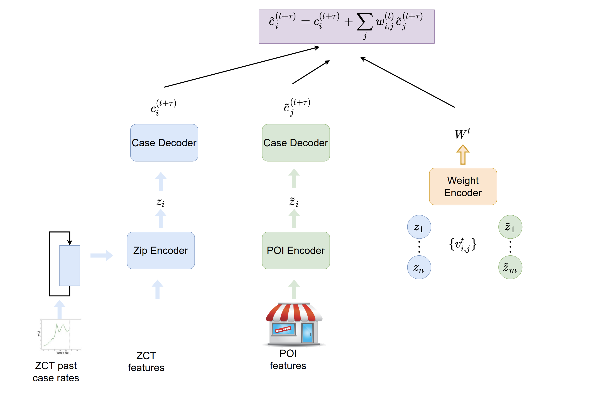
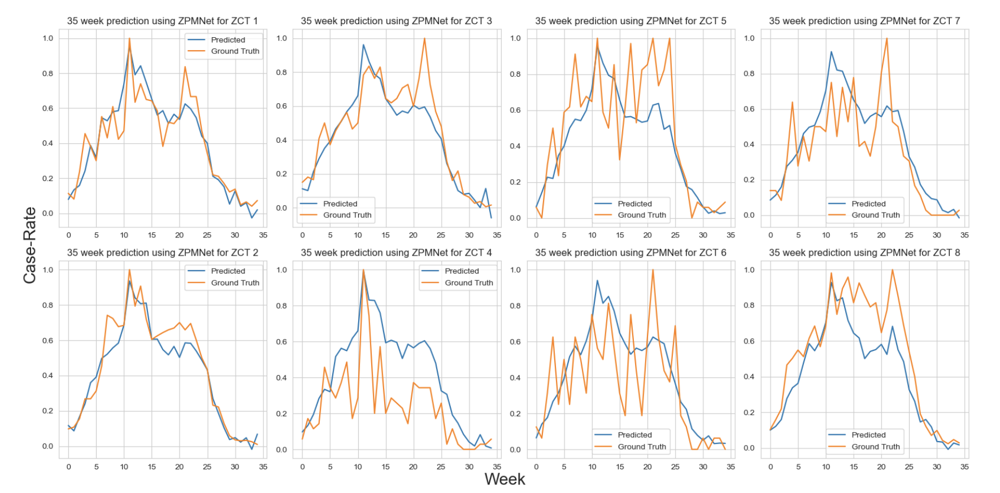

Most compartmental and meta-population models encounter difficulty in modelling the mechanism and magnitude of the spread of a disease at a localized level due to the oversimplification over the multiplicity of mechanical dynamics. As a result, this study will interlace the dynamics of disease spread for each region (Zip Code Tabulation Area, ZCTA) with localized indicator of exposure: visits to places of interest (POI). This allows us to capture the significance of mobility and exposure of individuals of a population at specific important locations as well as identify local hotspot locations which result in increased contacts and then infections.

We describe our neural model ZPMNet (Zip Code -POI Mobility Network). The main idea behind our architecture is to learn a good representation of dynamics for each of the POIs and ZCTs and leverage these representations along with visit counts to forecast future case rate as function of aggregated effect of mobility on each ZCT from each POI. Out model is divided into a) ZIP Encoder to encode features of ZCT and past case rate dynamics. b) POI Encoder that encodes a representation for POI based on its features such as area, total visits, POI type c) Weight Encoder that learn the influence of each POI on ZCT for given time-step based on the embedding d) Decoder: Uses the encoders as well as weights to get case rate predictions for each ZCT.

We report the accuracy of all models and baselines in Table 1. We observe that ZPMNet is the significantly better than all baselines. In particular we observe 52%-220% average improvements. As we forecast farther into the future (as 𝜏 increases) the performance of baselines quickly degrade faster than our model’s. We also observed that for over 63% of all ZCTs over model performs over 200% time better with predictions of other models failing to capture the general trends of ZCT case rates. Examples of ZPMNet predictions are shown. Since FFN is a modification ZPMNet without the GRU module, we observes that it also outperforms other baselines except ZPMNet. Thus, leveraging mobility relations via our approach still provides good performance even if we don’t utilize the entire history of case rates.
Data Source: SafeGraph; NYC Health